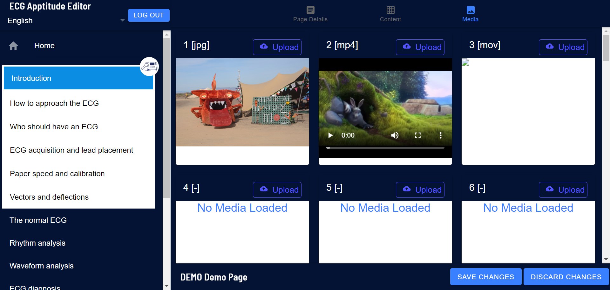

ECG Apptitude
A specialist application for cardiac education and practice
 client
client
The UCT Cardiac Clinic is the oldest dedicated clinical cardiology unit in sub-Saharan Africa, and is internationally respected as a leading cardiac center for its academic excellence and outstanding tertiary and quaternary cardiology care, clinical research conduct, and post graduate clinical and clinical-research training.
 project description
project description
The application software puts easy to use accurate information in the hands of cardiac professionals and students.
The content is intended for use as both a way to further your knowledge and a reference on the job in six languages.
Backend authoring tools support multiple languages, structure, image and video content. All content is automatcially refrenced and indexed.
A Mobile application allows off-line access to reference materials, notes and classes.
The content is intended for use as both a way to further your knowledge and a reference on the job in six languages.
Backend authoring tools support multiple languages, structure, image and video content. All content is automatcially refrenced and indexed.
A Mobile application allows off-line access to reference materials, notes and classes.
 my role
my role
I designed and implemented the authoring and mobile tools for all apsects of the project.
 technology
technology
Backend storage is provided by Google Firebase. Authoring tools are coded in angular for the browser. Mobile device software is developed with Ionic for Android and iOS devices.
 current status
current status
The software is in daily use by more than ten thousand specilist doctors and students.
 images
images
Some images showing the look and layout of the software.
Home Screen
Index
Contents Menu
Content Displayed
Author's Tools
Author's Media
 on the web
on the web
Here are some external links regarding the software